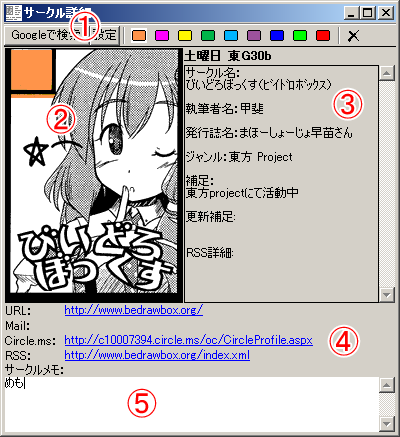
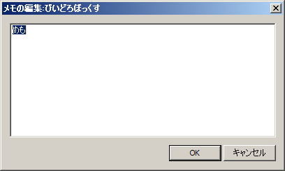

サークル詳細ウィンドウは、現在選択中のサークルの詳細情報が表示されます。
以下の4つの部分から構成されます。

サークルをチェックリストに登録したり、チェックを解除したりすることができます。
また、「Googleで検索」ボタンで、現在表示中のサークルのWebサイトをGoogleで検索できます。
現在選択されているサークルのサークルカットが表示されます。
現在選択されているサークルの詳細情報が表示されます。
URL : ホームページURLが登録されている場合、クリックすると標準のブラウザでホームページを表示します。
Mail : メールアドレスが登録されている場合は、クリックで標準のメーラが起動します。
Circle.ms : Circle.msに登録されている場合、クリックすると標準のブラウザで Circle.ms の登録情報のページを表示します。
RSS : RSSが登録されている場合、クリックすると標準のRSSリーダでRSSを表示します。
メモを記入することができます。
メインメニューの「サークルのメモを編集する」を選択するか「CTRL-T」を押すと、以下の様な「メモ編集ウインドウ」が表示されます。
